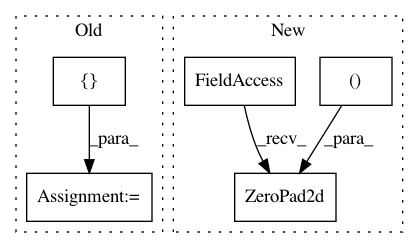

61228f3243eaee39cba31a9abd2afc6ead9612a8,implementations/pix2pix/models.py,GeneratorUNet,__init__,#GeneratorUNet#Any#Any#,45
Before Change
self.up5 = UNetUp(256, 64)
final = [ nn.Upsample(scale_factor=2),
nn.Conv2d(128, out_channels, 3, 1, 1),
nn.Tanh() ]
self.final = nn.Sequential(*final)
def forward(self, x):
// U-Net generator with skip connections from encoder to decoder
d1 = self.down1(x)
After Change
self.final = nn.Sequential(
nn.Upsample(scale_factor=2),
nn.ZeroPad2d((1, 0, 1, 0)),
nn.Conv2d(128, out_channels, 4, padding=1),
nn.Tanh()
)
In pattern: SUPERPATTERN
Frequency: 3
Non-data size: 5
Instances
Project Name: eriklindernoren/PyTorch-GAN
Commit Name: 61228f3243eaee39cba31a9abd2afc6ead9612a8
Time: 2018-05-04
Author: eriklindernoren@gmail.com
File Name: implementations/pix2pix/models.py
Class Name: GeneratorUNet
Method Name: __init__
Project Name: eriklindernoren/PyTorch-GAN
Commit Name: 61228f3243eaee39cba31a9abd2afc6ead9612a8
Time: 2018-05-04
Author: eriklindernoren@gmail.com
File Name: implementations/discogan/models.py
Class Name: GeneratorUNet
Method Name: __init__
Project Name: HyperGAN/HyperGAN
Commit Name: 2b4a7b0ceba071e026d618cf5898fcaa3d0e862f
Time: 2020-02-17
Author: martyn@255bits.com
File Name: hypergan/configurable_component.py
Class Name: ConfigurableComponent
Method Name: layer_pad